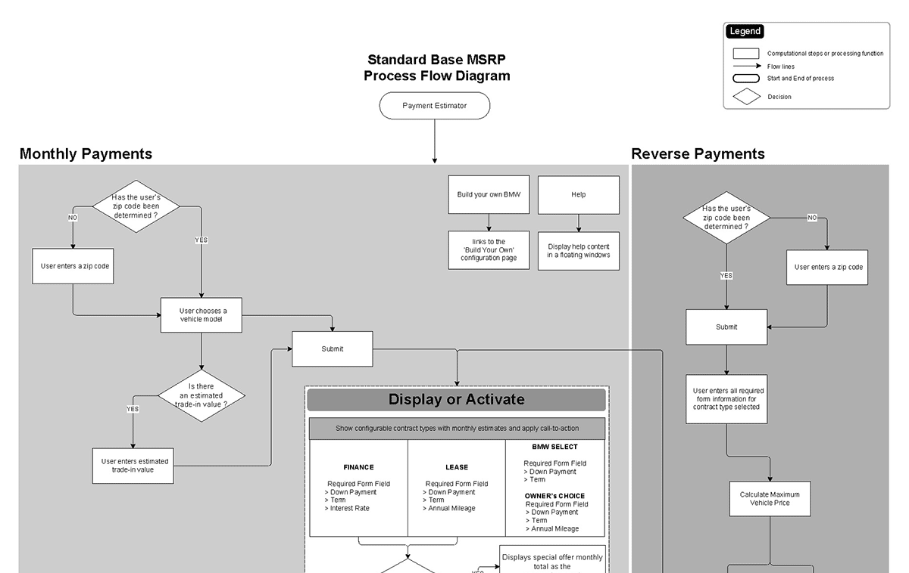

- Date: January 2015
- Roles: Engage, Analyze, Design, Build
- Tools: Axure, Sharepoint, Microsoft Office 365 Suite, Adobe CC

" Application (Finance Tool/Website)
Research showed that a subset of those seeking to own a BMW were clueless as to the financing options, and what it would require to become an owner of a BMW. To reduce the amount of time spent at the dealers and for a quicker turn-around with finalizing car ownerships, BMW wanted to make it easier for prospected customers to make more informed decisions.
The face of the Financial Services website was a complete disconnect from the official BMW website and was counterproductive in providing the information and functionality needed to assist a buyer in making these ownership decisions.
The approach was to provide a complete digital overhaul to the website, integrating the design with the parent BWM website. The redesign should repurpose the design styles and quality of the BMW brand. The redesign and updated architecture should allow prospected and current BMW customers to readily locate financing information on purchasing or leasing a new vehicle, or inquiring about certified pre-owned vehicles. We would also improve the interface and functionality of the finance calculator to enhance the users’ engagement.
Parallel to the website redesign BMW would raise consumer awareness at key consideration points, and educate dealers on why they should promote BMW Financial Services.
We conducted interview sessions with several dealers and BMW management team where we determined there was little or no educational awareness of BMW Financial Services at the dealer level and throughout the company.
Curtailing unnecessary business requirements, we embarked on preparing a thorough information architecture and usability process. These supported the redesign recommendations of an improved interface and a dynamic tool that streamline the steps in the financing process.
The BMW executive team and dealers embraced all the recommendations purposed to improve on the offerings of BMW Financial Services department. However due to the 2008 global recession and weak sales in the auto industry, BMW was forced to put a hold on some of the ideas.